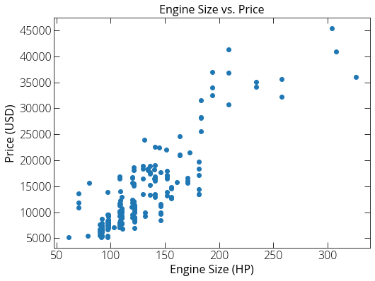
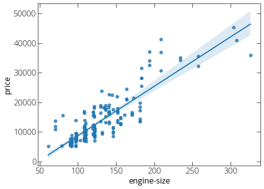
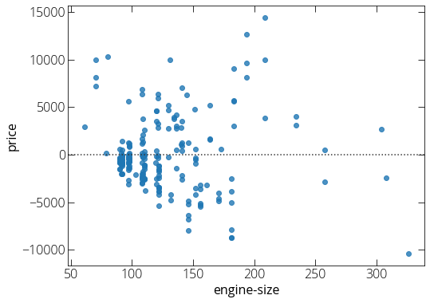

Linear regression
We find a line for which the mean squared error is least.
The solution for a and b has nice forms (bar denotes the average):
Here we will use a data set of used car prices. The data was downloaded from http://archive.ics.uci.edu/ml/machine-learning-databases/autos/. You can find a copy here as well.
import pandas as pd
import numpy as np
import matplotlib.pyplot as plt
%matplotlib inline
plt.rcParams["figure.figsize"] = (8, 6)
# First load our data
data = pd.read_csv("~/Desktop/car-price.csv")
# Let's have a look with head()
data.head()
| Unnamed: 0 | symboling | normalized-losses | make | fuel-type | aspiration | num-of-doors | body-style | drive-wheel | engine-location | ... | engine-size | fuel-system | bore | stroke | compression-ratio | horsepower | peak-rpm | city-mpg | highway-mpg | price | |
|---|---|---|---|---|---|---|---|---|---|---|---|---|---|---|---|---|---|---|---|---|---|
| 0 | 0 | 3 | ? | alfa-romero | gas | std | two | convertible | rwd | front | ... | 130 | mpfi | 3.47 | 2.68 | 9.0 | 111 | 5000 | 21 | 27 | 13495 |
| 1 | 1 | 3 | ? | alfa-romero | gas | std | two | convertible | rwd | front | ... | 130 | mpfi | 3.47 | 2.68 | 9.0 | 111 | 5000 | 21 | 27 | 16500 |
| 2 | 2 | 1 | ? | alfa-romero | gas | std | two | hatchback | rwd | front | ... | 152 | mpfi | 2.68 | 3.47 | 9.0 | 154 | 5000 | 19 | 26 | 16500 |
| 3 | 3 | 2 | 164 | audi | gas | std | four | sedan | fwd | front | ... | 109 | mpfi | 3.19 | 3.40 | 10.0 | 102 | 5500 | 24 | 30 | 13950 |
| 4 | 4 | 2 | 164 | audi | gas | std | four | sedan | 4wd | front | ... | 136 | mpfi | 3.19 | 3.40 | 8.0 | 115 | 5500 | 18 | 22 | 17450 |
5 rows × 27 columns
# Replace the ? marks with NaN
data.replace("?", "NaN", inplace=True)
data.head()
| Unnamed: 0 | symboling | normalized-losses | make | fuel-type | aspiration | num-of-doors | body-style | drive-wheel | engine-location | ... | engine-size | fuel-system | bore | stroke | compression-ratio | horsepower | peak-rpm | city-mpg | highway-mpg | price | |
|---|---|---|---|---|---|---|---|---|---|---|---|---|---|---|---|---|---|---|---|---|---|
| 0 | 0 | 3 | NaN | alfa-romero | gas | std | two | convertible | rwd | front | ... | 130 | mpfi | 3.47 | 2.68 | 9.0 | 111 | 5000 | 21 | 27 | 13495 |
| 1 | 1 | 3 | NaN | alfa-romero | gas | std | two | convertible | rwd | front | ... | 130 | mpfi | 3.47 | 2.68 | 9.0 | 111 | 5000 | 21 | 27 | 16500 |
| 2 | 2 | 1 | NaN | alfa-romero | gas | std | two | hatchback | rwd | front | ... | 152 | mpfi | 2.68 | 3.47 | 9.0 | 154 | 5000 | 19 | 26 | 16500 |
| 3 | 3 | 2 | 164 | audi | gas | std | four | sedan | fwd | front | ... | 109 | mpfi | 3.19 | 3.40 | 10.0 | 102 | 5500 | 24 | 30 | 13950 |
| 4 | 4 | 2 | 164 | audi | gas | std | four | sedan | 4wd | front | ... | 136 | mpfi | 3.19 | 3.40 | 8.0 | 115 | 5500 | 18 | 22 | 17450 |
5 rows × 27 columns
# Get some basic statistical description
data.describe()
| Unnamed: 0 | symboling | wheel-base | length | width | height | curb-weight | engine-size | compression-ratio | city-mpg | highway-mpg | |
|---|---|---|---|---|---|---|---|---|---|---|---|
| count | 205.000000 | 205.000000 | 205.000000 | 205.000000 | 205.000000 | 205.000000 | 205.000000 | 205.000000 | 205.000000 | 205.000000 | 205.000000 |
| mean | 102.000000 | 0.834146 | 98.756585 | 174.049268 | 65.907805 | 53.724878 | 2555.565854 | 126.907317 | 10.142537 | 25.219512 | 30.751220 |
| std | 59.322565 | 1.245307 | 6.021776 | 12.337289 | 2.145204 | 2.443522 | 520.680204 | 41.642693 | 3.972040 | 6.542142 | 6.886443 |
| min | 0.000000 | -2.000000 | 86.600000 | 141.100000 | 60.300000 | 47.800000 | 1488.000000 | 61.000000 | 7.000000 | 13.000000 | 16.000000 |
| 25% | 51.000000 | 0.000000 | 94.500000 | 166.300000 | 64.100000 | 52.000000 | 2145.000000 | 97.000000 | 8.600000 | 19.000000 | 25.000000 |
| 50% | 102.000000 | 1.000000 | 97.000000 | 173.200000 | 65.500000 | 54.100000 | 2414.000000 | 120.000000 | 9.000000 | 24.000000 | 30.000000 |
| 75% | 153.000000 | 2.000000 | 102.400000 | 183.100000 | 66.900000 | 55.500000 | 2935.000000 | 141.000000 | 9.400000 | 30.000000 | 34.000000 |
| max | 204.000000 | 3.000000 | 120.900000 | 208.100000 | 72.300000 | 59.800000 | 4066.000000 | 326.000000 | 23.000000 | 49.000000 | 54.000000 |
data.info()
<class 'pandas.core.frame.DataFrame'>
RangeIndex: 205 entries, 0 to 204
Data columns (total 27 columns):
# Column Non-Null Count Dtype
--- ------ -------------- -----
0 Unnamed: 0 205 non-null int64
1 symboling 205 non-null int64
2 normalized-losses 205 non-null object
3 make 205 non-null object
4 fuel-type 205 non-null object
5 aspiration 205 non-null object
6 num-of-doors 205 non-null object
7 body-style 205 non-null object
8 drive-wheel 205 non-null object
9 engine-location 205 non-null object
10 wheel-base 205 non-null float64
11 length 205 non-null float64
12 width 205 non-null float64
13 height 205 non-null float64
14 curb-weight 205 non-null int64
15 engine-type 205 non-null object
16 num-of-cylinder 205 non-null object
17 engine-size 205 non-null int64
18 fuel-system 205 non-null object
19 bore 205 non-null object
20 stroke 205 non-null object
21 compression-ratio 205 non-null float64
22 horsepower 205 non-null object
23 peak-rpm 205 non-null object
24 city-mpg 205 non-null int64
25 highway-mpg 205 non-null int64
26 price 205 non-null object
dtypes: float64(5), int64(6), object(16)
memory usage: 43.4+ KB
# Some data are set as object while importing. we can fix that.
data["price"] = data["price"].astype("float")
data['price'].head()
0 13495.0
1 16500.0
2 16500.0
3 13950.0
4 17450.0
Name: price, dtype: float64
# Let's plot engine-size vs. price
plt.scatter(data['engine-size'], data['price'])
plt.title("Engine Size vs. Price")
plt.xlabel("Engine Size (HP)")
plt.ylabel("Price (USD)")
plt.show()

# Regplot using seaborn
import seaborn as sns
sns.regplot(x="engine-size", y="price", data=data)
plt.show()

Residual Plot:
We can plot the errors to see if our model is good fit for the data or whether the residual plot shows certain trends.
sns.residplot(x="engine-size", y="price", data=df)
plt.show()

Linear Regression Model in Scikit learn:
from sklearn.linear_model import LinearRegression
# Linear Regression does not work with NaN data points
data_copy = data.dropna(subset=["engine-size"], axis=0)
data_copy = data_copy.dropna(subset=["price"], axis=0)
lm = LinearRegression()
X = data_copy["engine-size"]
Y = data_copy["price"]
lm.fit(X, Y)
print(lm.intercept_, lm.coef_)
-7963.338906281042 [166.86001569]
We can predict Y values for given X:
lm.predict(np.array([[250]]))
# Correlation
import scipy.stats as stats
pearson_coef, p_values = stats.pearsonr(data_copy["engine-size"], data_copy["price"])
print(pearson_coef, p_values)
0.8723351674455185 9.265491622198389e-64
Distribution plot:
Compare predicted data to the actual test data.
ax1 = sns.distplot(df["price"], hist=False, color="r", label="test data")
sns.distplot(Yhat, hist=False, color="b", label="Predicted values", ax=ax1)
Multiple liner regression:
Instead of one dependent variable we can include multiple variables.
Where X is values for ["horsepower", "curb-weight", "engine-size", "highway-mpg"]. Let's do it with two variables:
df["highway-mpg"] = df["highway-mpg"].astype("float")
mean = df["highway-mpg"].mean()
df["highway-mpg"].replace(np.nan, mean, inplace=True)
Z = df[['horsepower', 'highway-mpg']]
lm.fit(Z, df[['price']]);
print(lm.coef_, lm.intercept_)
lm.predict(np.array([[150, 30]]))
Polynomial regression:
f = np.polyfit(df["horsepower"], df["price"], 3) # third order poly
p = np.poly1d(f)
print(p)